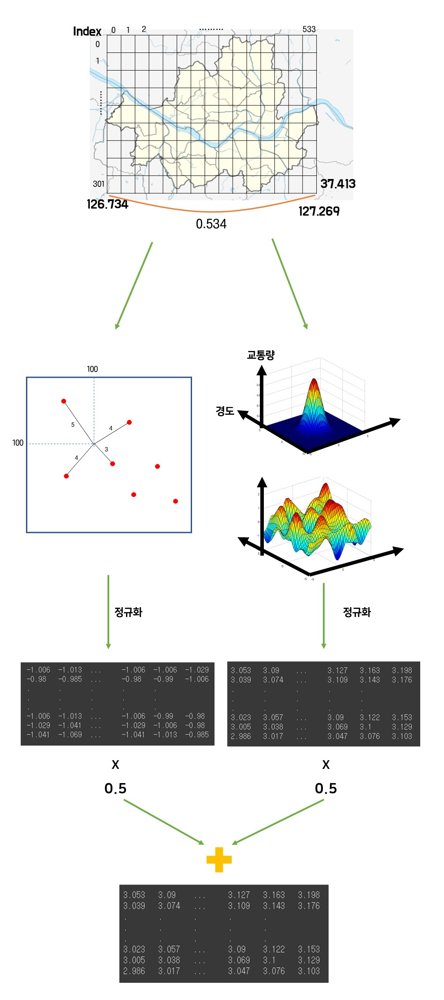
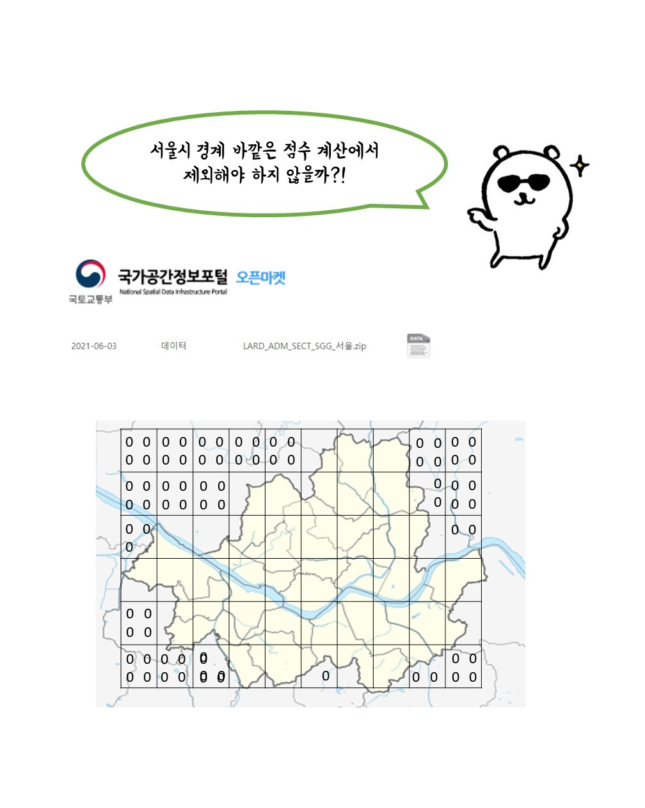
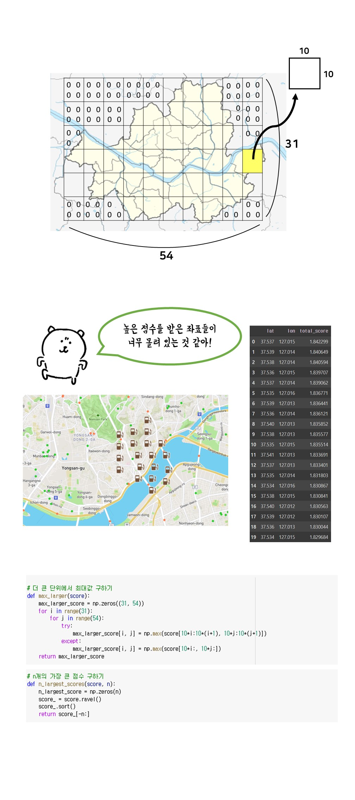
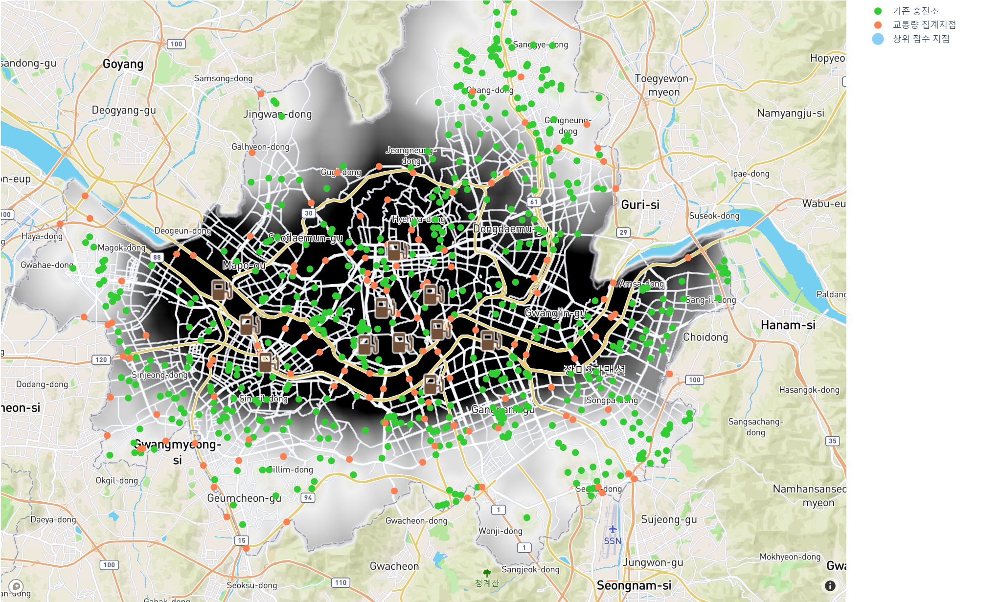

충전소 위치 정보: Kakao Map의 geolocation API를 통해 위도/경도를 주소로 변환하였습니다.
교통량 정보: 30일간의 교통량 + 매 시간마다의 교통량 + 유입, 유출 교통량
(30x24x2=1440개의 정보를 ‘교통량합’으로 압축하였습니다.)

서울시 면적을 둘러싸는 직사각형 모양의 2차원 배열을 2개 만들었습니다.
배열의 row 개수: 위도 차이 -> (37.715-37.413)*1000=302
배열의 col 개수: 경도 차이 -> (127.269-126.734)*1000=534
1. distance array
배열 내의 특정 위치와 그로부터 가장 가까운 전기차 충전소까지의 거리를 계산합니다.
가장 가까운 충전소와의 거리가 멀수록 값이 커집니다.
2. traffic array
모든 지점에서 정확한 교통량을 알아낼 수 없기 때문에,
교통량 측정기가 없는 곳은 주변 측정기가 측정한 값을 통하여 계산합니다.
교통량이 많을수록 값이 커집니다.
두 배열의 원소들을 모두 계산하고 나면, 두 배열의 스케일을 맞추기 위해 정규화 과정을 거쳐줍니다.
그 후, 두 배열을 5:5 비율로 계산하여 최종 배열인 total array를 생성합니다.

저희가 서울 소재의 전기차 충전소만 조사했기 때문에,
서울시의 범위 내에 속하지 않는 영역(distance array의 네 모퉁이 영역)의 값이 비정상적으로 커지는 문제가 있었습니다.
때문에 최종 결과를 산출할 때도 서울 외부의 지역이 선정되었기 때문에,
서울 외부 지역의 값을 모두 무시하기 위해 서울시를 둘러싸는 외곽선 정보를 사용하였습니다.

저희는 서울시를 302x534, 즉 161,268조각으로 나누어 데이터를 다루고 있었습니다.
서울시 면적을 161.268조각으로 나누면, 한 조각은 약 3000m2 로, 연세대학교 면적(1,443,182 m2) 의 481분의 1에 불과합니다.
이렇게 작은 조각으로 계산하다보니, 최종 배열 total array를 오름차순으로 정렬하면
비슷한 지역들이 너무 몰려있는 문제를 발견하였습니다.
이를 해결하기 위해 10x10=100개의 좌표를 하나의 sub array로 묶어서 해당 sub array의 최댓값만을 모아 정렬하였습니다.
기존 302x534개의 데이터에서, 31x54개의 데이터로 축소되었고,
그만큼 배열 사이의 실제 거리가 멀어졌기 때문에 비슷한 지역이 몰려있는 문제를 해결할 수 있었습니다.

이렇게 생성된 31x54개의 sub array 중 가장 높은 값을 갖는 지점의 좌표를 통해 plotly를 이용하여 서울시 지도 상에 나타내었습니다.
저희 페이지의 상위 메뉴에서 traffic 탭과 distance 탭을 누르시면 특정 지점의 traffic 점수와 distance 점수를 확인하실 수 있습니다.
total 탭을 누르시면 두 점수가 합쳐진 최종 점수를 확인하실 수 있으며,
다음 전기차 충전소가 어디에 설치되면 좋을지에 대한 우선순위 또한 확인하실 수 있습니다.